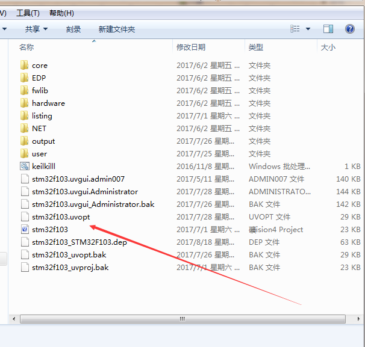
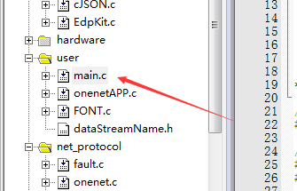
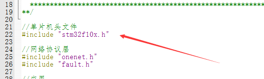
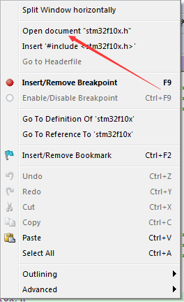
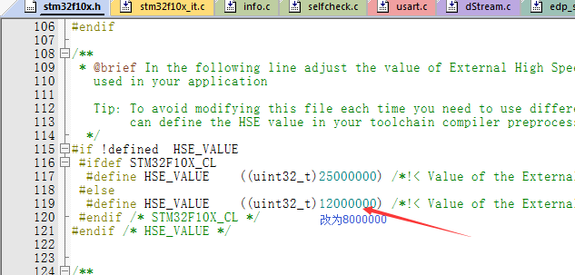
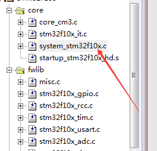
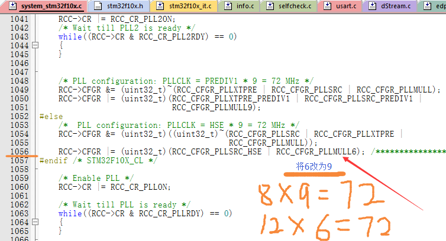
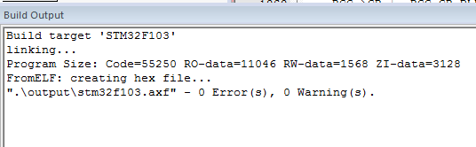

关于ONENET EDP协议在非官方开发板上的移植
关于ONENET EDP协议在非官方开发板上的移植
EDP方式接入onenet的SDK包在onenet官网论坛资料区下载，因官方例程是基于麒麟系列的开发板编写的，麒麟用的是stm32f103系列芯片，本次以f103c8t6最小系统板为本次移植目标板，理论上移植是不需要更改任何代码的，但是麒麟座用的外部晶振是12MHz的，而市场上大部分厂家生产的开发板外部晶振为8MHz。因此需要更改一些配置参数。
配置流程
- 1.打开下载好的源码例程，双击打开工程文件
- 
- 2.在左侧找到main文件双击打开。
- 
- 3.在main文件中找到#include<stm32f10x.h>
- 
- 4.单击鼠标右键选择 open document “stm32f10x.h”
- 
- 5.在stm32f10x.h 文件中找到箭头所示的位置（119行），将12000000改为8000000【将外部晶振频率配置为8MHz】
- 
- 6.在左侧工程文件栏找到 system_stm32f10x.c 双击打开.
- 
- 7.找到如图所示的位置，将倍频系数改为9倍频【外部晶振8*9=72Mhz】72Mhz是stm32f103系列芯片理论上的最大运行速度.
- 
- 8.到此为止，官方例程移植完毕。编译通过后直接下载就可以在自己的板子上运行官方例程.
- 
本博客所有文章除特别声明外，均采用 CC BY-NC-SA 4.0 许可协议。转载请注明来自 Mr.chen Blog！


评论